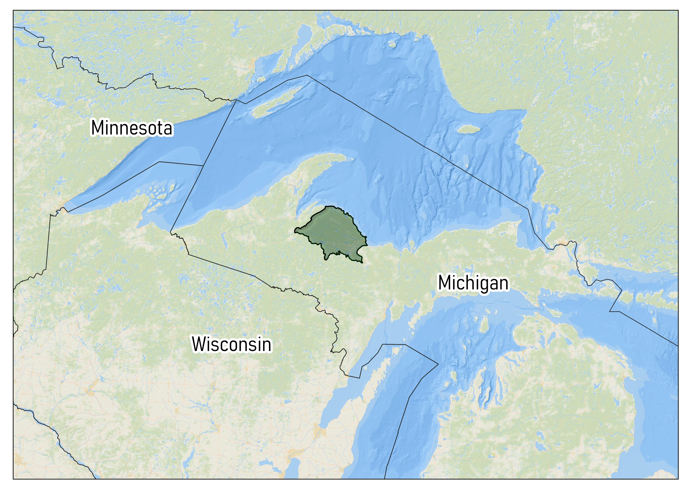

Using LANDFIRE Products to explore historical and current ecosystems
2021-03-11
1 This document…
is a technical guide originally created for The Nature Conservancy’s Global Science Gathering, working session titled “Billions (and billons) of pixels coupled with hundreds of ecosystem models: Making LANDFIRE products work for your landscape”. It was written in R using R-Studio, the “bookdown” package and is hosted on GitHub.
The goals are to:
- get acres of ecosystems past and present
- explore ecosystem conversion
- compare amounts of succession classes past and present
In the United States, including the insular areas, LANDFIRE provides the datasets and ecological model results to get at these challenges and more. Here we walk you through some of the technical steps needed to start your analysis. We will do our work in a model landscape, the Michigamme Highlands in the Upper Peninsula of Michigan (highlighted in green in map below).
To help you with the concepts we work through pre-processed LANDFIRE data for an example landscape. To prepare the datasets for your landscape see the Appendix.
1.1 Download this!
To work through this guide you will need to download this Excel workbook by clicking the hyperlinked text, then the “Download” button that will be on the right side of the screen.
